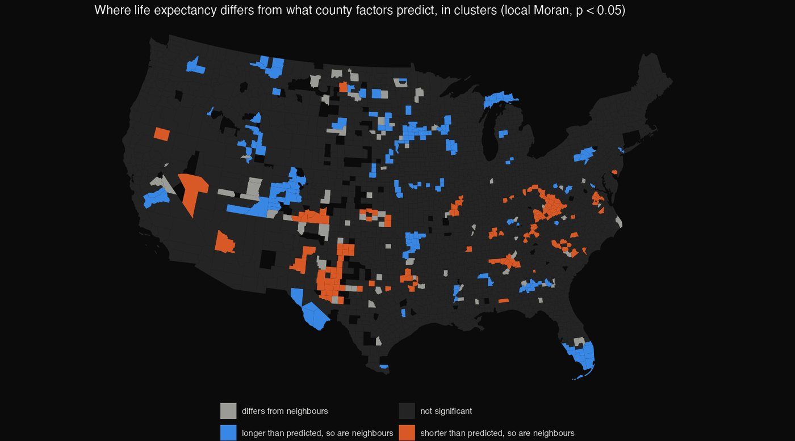
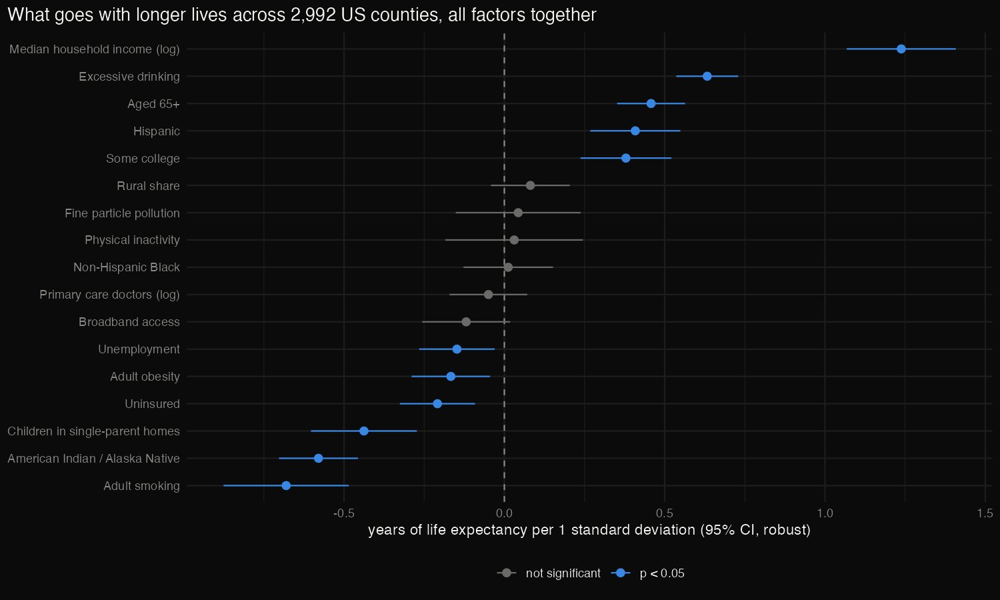
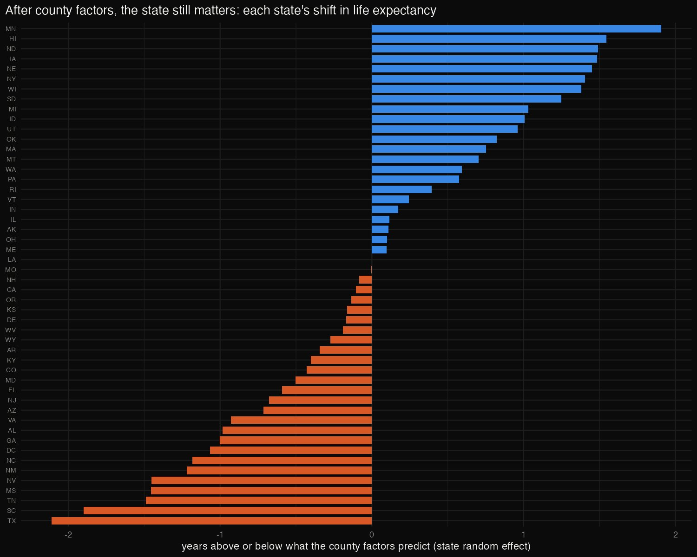
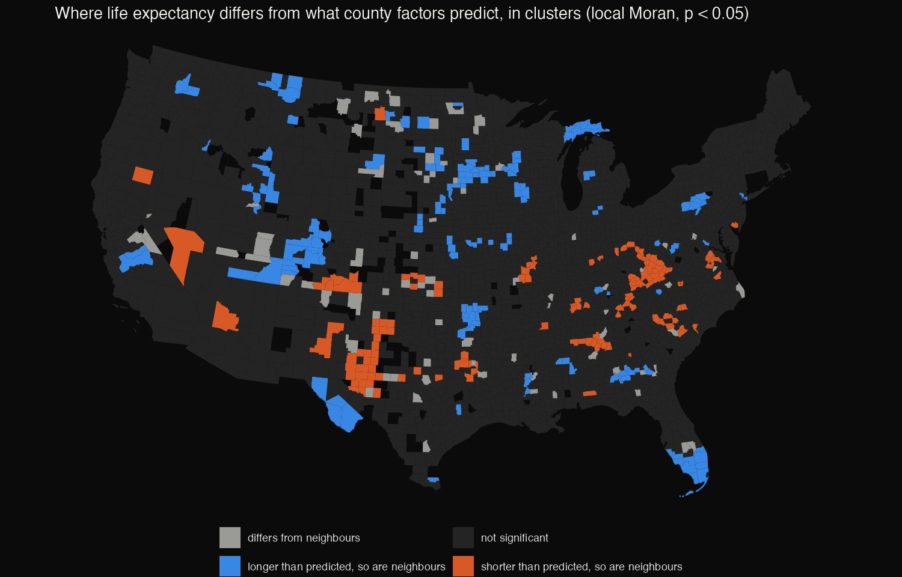
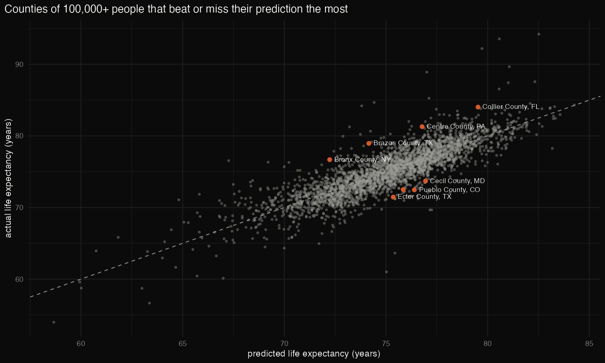

R · Statistical modelling · 2026-10
What Goes With Longer Lives (R)
An R analysis of 2,992 US counties: which conditions go with longer life expectancy, how much is about the state a county is in, and where on the map lives are shorter or longer than those conditions predict.

These are associations between counties, not effects on people. Some predictors (smoking, obesity, inactivity) are themselves modelled estimates.
01 — The problem
US county life expectancy runs from 54 to 94 years, and even the middle 98% of counties span 17 years. Public health departments, hospitals and funders want to know where to look.
Which county conditions go with longer lives once they are considered together? How much of the gap is about the state a county is in? And where are lives shorter, or longer, than those conditions predict?
02 — What I built
An R project on County Health Rankings 2025 (3,152 counties, 90 measures):
- tidyverse to turn a two-header-row file into one county table.
- A regression on 17 standardised factors, with robust standard errors and collinearity checks.
- A mixed model (lme4) with a random intercept for each state.
- Spatial statistics (sf, spdep, tigris): Moran's I and local clusters of what the model misses.
- An R Markdown report, and a Python re-fit that confirms every number.
03 — How it was built
- 01
Tidy the file, and question every blank
The CSV has two header rows (labels, then codes), and its state rows are mixed in with county rows. 166 counties had no primary-care physician rate. On inspection, 157 of those blanks had a numerator of zero: they are counties with no primary care physicians, not missing data. Dropping them would have quietly removed the places with the worst access. Coding them 0 keeps 141 more counties, 2,992 in all.
primary_care = if_else(is.na(primary_care) & pc_doctors %in% 0, 0, primary_care)) |> - 02
Model all the factors together
Seventeen factors are standardised, so each coefficient reads as years of life expectancy per one standard deviation. Errors are heteroskedasticity-robust (HC3). Together the factors explain 72.2% of the variation; the typical miss is 1.9 years.
Income leads (+1.24 years per SD), then smoking (−0.68), the American Indian / Alaska Native share (−0.58) and single-parent households (−0.44). Physical inactivity overlaps with smoking and obesity (VIF 9.8) and adds nothing once they are in.

rob <- coeftest(ols, vcov = vcovHC(ols, type = "HC3")) - 03
Ask how much is the state
A mixed model gives each state its own intercept. States alone hold 39.5% of the variation in county life expectancy. The county factors explain most of that, cutting the between-state variance from 5.36 to 1.10, but a state shift remains. Counties in Minnesota live 1.9 years longer than their conditions predict; counties in Texas, 2.1 years shorter.

mixed <- lmer(update(f, . ~ . + (1 | state)), data = z, REML = TRUE) - 04
Map what the model misses
Counties that share a border are neighbours. Moran's I asks whether a county's residual looks like its neighbours'. Life expectancy itself is strongly clustered (0.547), and even after the model the residuals are too (0.196, p ≈ 10−70). Local Moran finds where:
- Shorter than predicted: 139 counties, in central Appalachia, West Texas and the Carolinas.
- Longer than predicted: 162 counties, in South Florida, the upper Midwest and the Colorado/Utah mountains.

mt <- moran.test(shp$residual, w, zero.policy = TRUE) - 05
Check it in another language
check.pyre-fits everything in Python (statsmodels) from the same table. It matches R on all 17 coefficients and robust errors, R², every residual, Moran's I computed from R's own neighbour list (to 1e-9), and the mixed model's fixed effects (largest gap 8.7×10−7 years).assert abs(i - moran.loc["model residual", "morans_i"]) < 1e-9, (i, moran.loc["model residual", "morans_i"])
04 — Results
- Income first: +1.24 years per standard deviation of (log) household income, holding everything else fixed.
- Smoking: the strongest health behaviour, at −0.68 years per SD.
- A trap to avoid: "excessive drinking" comes out positive (+0.63). Binge drinking is reported more in wealthier counties, so it marks the county; it is not a habit that adds years.
- College towns beat the model: among counties of 100,000+, the biggest over-performers include Brazos (Texas A&M), Centre (Penn State), Clarke (University of Georgia), Cache (Utah State) and Champaign. Low student incomes understate how young and healthy these places are.
- Under-performers among large counties include Pueblo (CO), Ector (TX), Citrus (FL) and Baltimore city.

05 — What I'd do next
- Fit a spatial regression (lag or error model), since the residuals cluster.
- Use race-specific life expectancy to separate composition from place.
- Follow the same counties across CHR releases.